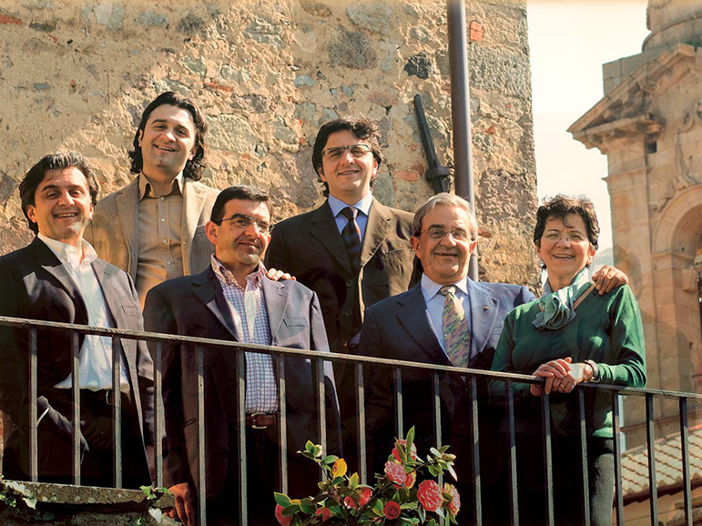
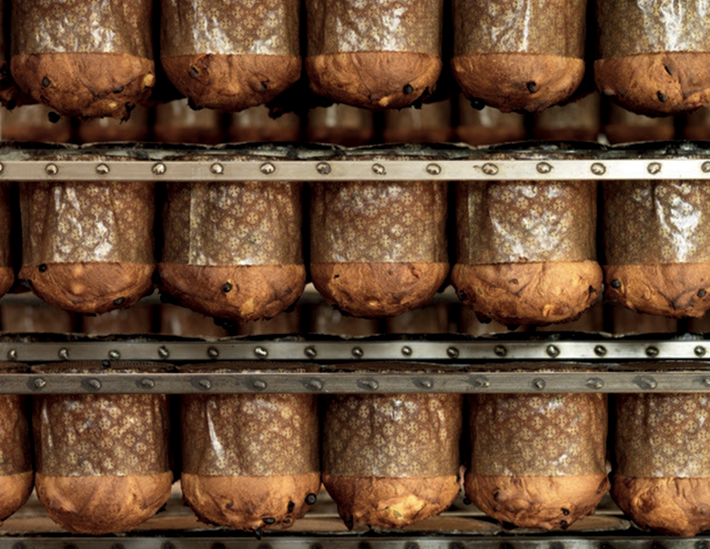

Notre famille
Depuis 1921, la famille Corsini perpétue l'art de la pâtisserie artisanale au pied du mont Amiata. Ce qui a commencé dans l'ancien four à bois de Corrado et Solidea est aujourd'hui l'héritage de quatre générations qui préfèrent produire moins pour produire mieux, en respectant les rythmes de la nature et les parfums de la Toscane la plus authentique. Tradition, levain naturel et le plaisir de bien faire les choses : un morceau d'histoire qui sort du four chaque matin pour ceux qui recherchent le goût de l'authentique.


L'art de la patience
Le premier ingrédient exclusif, c'est notre passion pour la qualité. Vient ensuite le soin apporté au levain, que nous traitons depuis toujours chez Corsini comme s'il s'agissait d'un être vivant.
Des ingrédients de premier choix, le respect des règles de la meilleure tradition pâtissière, un travail minutieux et patient, le pétrissage caractéristique à la main. Puis la magie de l'ancien four familial pour une cuisson optimale et enfin... l'attente, un long repos naturel d'environ 48 heures jusqu'à ce que notre Panettone puisse se réveiller encore plus moelleux et savoureux.